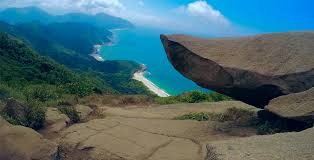

A Pedra do Telégrafo é famosa por sua vista deslumbrante e pela sensação de estar à beira de um penhasco. Localizada em Barra de Guaratiba, é uma trilha relativamente fácil que oferece uma experiência inesquecível.
Detalhes da Trilha
- Dificuldade: Baixa a Moderada
- Duração: Aproximadamente 1-2 horas
- Distância: Cerca de 3 km (ida e volta)
- Ponto de Partida: Estrada da Barra, Barra de Guaratiba
Dicas para a Trilha
- Leve água e protetor solar.
- Use calçados confortáveis para caminhada.
- Chegue cedo para evitar multidões, especialmente nos fins de semana.
- Respeite as normas de segurança ao tirar fotos na pedra.